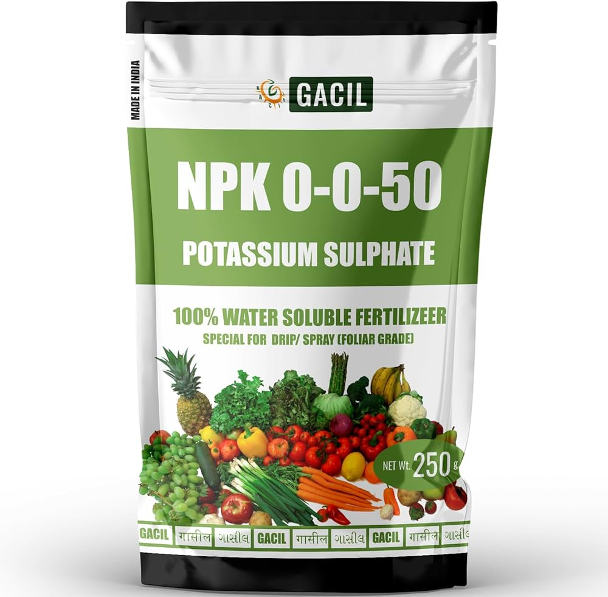

Description:
Potassium Sulfate use to improve the yeild and quality of plants growing in soil that are lacking an adequate supply of this essential nutrient. it used as a salt substrate.
Content:
1. Nitrogen (N): 0%
2. Phosphorus (P): 0%
3. Potassium (K): 50%
- Points:
- Potassium (K) promotes tuber development, improves starch content, and enhances disease resistance.
- Helps potatoes develop strong, healthy tubers with good storage qualities.
- Best applied during the tuber initiation and bulking stages to maximize yield and quality.
- Particularly beneficial for soils deficient in potassium or when aiming to boost potassium levels for better potato yields.